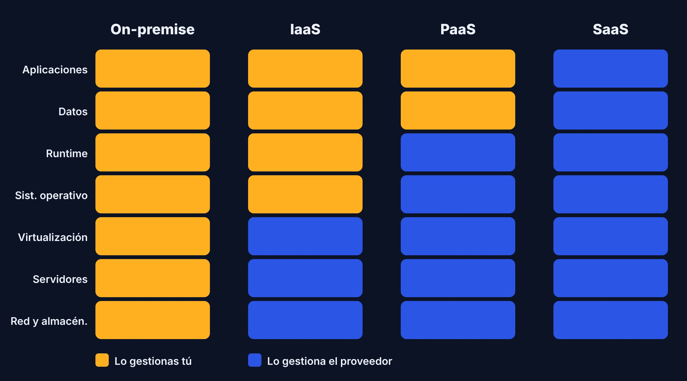
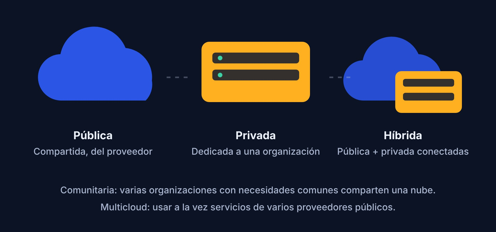

Tres formas de consumir la nube, cuatro de desplegarla
Los modelos de servicio indican cuánto administras tú, los modelos de despliegue indican quién comparte la infraestructura.

Modelos de servicio
Infraestructura como servicio
Recibes máquinas virtuales, redes y discos. Tú instalas el sistema operativo, el runtime y tu aplicación. Es el nivel con más control y más responsabilidad.
Ideal para: migrar aplicaciones existentes, pruebas, cargas que requieren configuración especial.
Amazon EC2 Azure Virtual Machines Google Compute Engine
Plataforma como servicio
El proveedor gestiona servidores, sistema operativo y runtime. Tú subes tu código y datos. Incluye escalado, balanceo y actualizaciones.
Ideal para: desarrollar y publicar aplicaciones web y APIs rápidamente.
AWS Elastic Beanstalk Azure App Service Google App Engine
Software como servicio
Usas una aplicación completa desde el navegador. No instalas ni administras nada; solo la configuras y la usas.
Ideal para: correo, ofimática, CRM, videollamadas.
Gmail Microsoft 365 Zoom Slack
Funciones como servicio
Escribes funciones pequeñas que se ejecutan solo cuando ocurre un evento (una petición HTTP, un archivo subido, un mensaje en una cola). Pagas por ejecución y la plataforma escala sola.
Ideal para: APIs ligeras, procesamiento de archivos, automatizaciones.
AWS Lambda Azure Functions Google Cloud Functions
¿Cuánto controlas en cada modelo?
| Modelo | Control | Esfuerzo de administración | Velocidad de arranque | Ejemplo de uso |
|---|---|---|---|---|
| IaaS | Alto | Alto | Media | Servidor web propio |
| PaaS | Medio | Medio | Alta | API publicada con un comando |
| FaaS | Bajo | Bajo | Muy alta | Procesar una imagen subida |
| SaaS | Mínimo | Mínimo | Inmediata | Correo corporativo |
Modelos de despliegue

Nube pública
Infraestructura compartida y operada por un proveedor (AWS, Azure, Google Cloud). Es la más económica y escalable.
Nube privada
Infraestructura dedicada a una sola organización, dentro de su centro de datos o alojada por un tercero. Más control, más costo.
Nube híbrida
Combina nube privada y pública. Por ejemplo, datos sensibles en casa y picos de demanda en la nube pública.
Nube comunitaria
Compartida por varias organizaciones con intereses comunes, como universidades o entidades de gobierno.
¿Cuál elegir?
Necesito control total del entorno
Elige IaaS. Tendrás que parchear, asegurar y escalar tus servidores.
Solo quiero publicar mi aplicación web
Elige PaaS. Subes el código y la plataforma se encarga del resto.
Mi carga es esporádica o basada en eventos
Elige serverless. Solo pagas cuando se ejecuta y no administras servidores.
Necesito una herramienta ya hecha
Elige SaaS. Es la opción más rápida si el producto cubre tu necesidad.